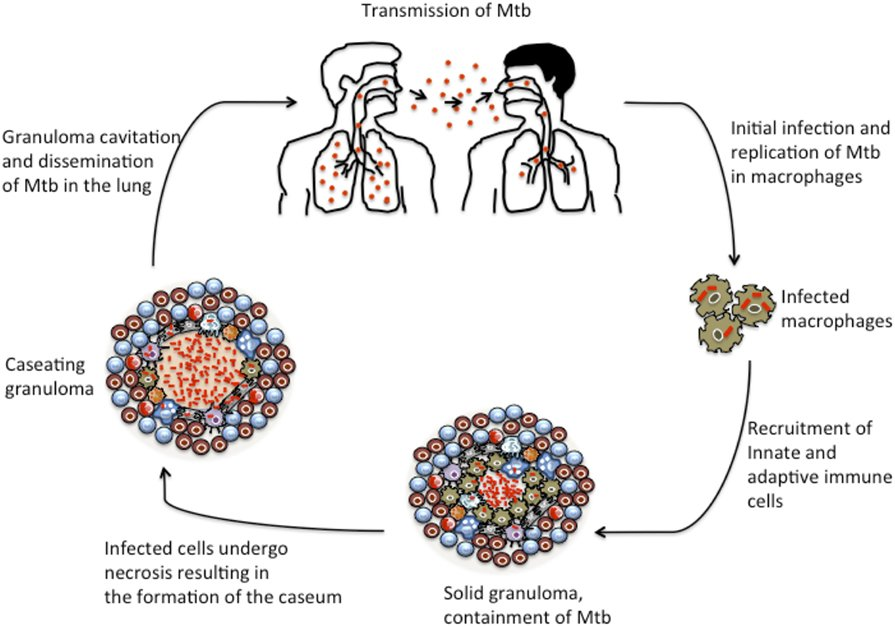

Week 2
Tuberculosis (TB)
TB Basics & Transmission
| Term | Detail |
|---|---|
| Causative Organism | Mycobacterium tuberculosis is the most common cause; M. leprae causes leprosy, a lesser public-health concern than the TB strains. |
| Bacteria Type | An aerobic, rod-shaped bacillus — it needs a lot of oxygen to grow and proliferate, which is why TB typically affects the lungs first (it can also grow in bone or brain). |
| Granulomas | Walled-off areas containing macrophages and lymphocytes, with a hard outer casing and a cheese-like (caseous) center made of broken-down tissue. Sometimes called tubercles. |
| Growth Rate | Very slow-growing — which makes TB harder to treat, since most drugs work by targeting actively proliferating organisms. |
Transmission
- Spread human-to-human (by far the most common route), though also from cattle or birds.
- Travels in airborne droplets, expelled by an infected person's cough or sneeze and inhaled by a new host.
- From there it spreads to the lungs by traveling through the blood and lymphatic system.

Latent vs. Active TB
Latent TB
- A person with a normal, working immune system exposed to TB usually just kills off the bacteria — no disease results.
- In latent TB, the bacteria survive but stay walled off inside granulomas, dormant — no clinical signs or symptoms.
- Can remain latent for life.
Active TB
- Develops when the immune system can no longer contain the bacteria and it reactivates.
- Reactivation triggers: HIV/immunocompromise, immunosuppressive medications (e.g., for rheumatoid arthritis or another autoimmune disease), poor nutritional status, renal failure.
- Symptoms usually develop gradually — often not noticed until the disease is fairly advanced.
| Term | Detail |
|---|---|
| Early, Nonspecific Symptoms | Fatigue, weight loss, lethargy, anorexia, a low-grade fever (classically worse in the afternoon), and a productive cough that develops slowly over months. |
| More TB-Specific | Night sweats. Generalized anxiety can also develop as the disease progresses. |
| Advanced, Untreated | Dyspnea, chest pain, hemoptysis. |
| Extrapulmonary TB | If the bacteria implant somewhere outside the lungs: neurologic symptoms/meningitis (brain), bone pain (bone), or urinary problems (kidney). |
Screening & Diagnosis
| Term | Detail |
|---|---|
| Interferon-Gamma Release Assay | A blood draw — used for high-risk populations (for example, a nurse working in a high-risk area). |
| TB Skin Test | Used for non-high-risk, general-population screening (for example, a healthcare student). |
| Chest X-Ray | The next step after a positive screening test — a positive screen alone doesn't confirm active TB, so the chest X-ray looks for granulomas. |
| Sputum Stain & Culture | Looks directly for mycobacteria — confirms the diagnosis. |
Patients are considered contagious until their sputum no longer grows mycobacteria. The exact timing of that is Med-Surg content, not needed for this course.
First-Line TB Drugs — Isoniazid & Rifampin
TB treatment uses first-line drugs (the primary regimen) and second-line drugs (reserved for drug-resistant cases — not covered by name in this course). Drug-susceptibility testing guides therapy, but while results are pending, patients are typically started on a broad, four-drug first-line regimen and then narrowed down. They're kept on at least two drugs at a time whenever possible.
| Term | Detail |
|---|---|
| Isoniazid (INH) | The most widely used TB medication. Disrupts mycobacterial cell wall synthesis. Given PO. Side effects: peripheral neuropathy (teach and monitor for it, similar to diabetic neuropathy), hepatotoxicity (metabolized by the liver — monitor liver enzymes), optic neuritis (visual disturbances), and hyperglycemia. Avoid antacids (they reduce INH absorption). Often given with rifampin, which can increase CNS toxicity symptoms — monitor for that. Use caution with phenytoin, since INH increases phenytoin's effects. Often paired with pyridoxine (vitamin B6) to help prevent the peripheral neuropathy. |
| Rifampin | Also first-line; used for other mycobacterial infections too (meningitis, HIV-related infections, leprosy). Works by inhibiting protein synthesis. Metabolized by the liver — can cause hepatitis, so liver function is monitored; can also affect bleeding/clotting times. Key teaching point: turns urine and other body fluids (tears, sweat) a red-orange-brown color — harmless, but important to mention. A strong CYP inducer with major drug interactions — it decreases the effects of beta blockers, benzodiazepines, cyclosporine, anticoagulants, oral diabetes medications, phenytoin, and theophylline, so patients on those may need higher doses while taking rifampin. Given PO or IV. |
First-Line TB Drugs — Ethambutol, Pyrazinamide & Streptomycin
| Term | Detail |
|---|---|
| Ethambutol | First-line, bacteriostatic. Suppresses RNA synthesis, which in turn suppresses protein synthesis. Side effect: retrobulbar neuritis — inflammation of the optic nerve at the back of the eye. Watch for visual changes; these patients may need more frequent ophthalmology follow-up. PO only. Often combined with INH and rifampin — a single combination pill with all three exists. Contraindicated under age 13. |
| Pyrazinamide (PZA) | Bacteriostatic or bactericidal depending on concentration. Always used in combination with other TB drugs, never alone. Thought to inhibit lipid and nucleic acid synthesis. Metabolized by the liver — hepatotoxicity risk, plus hyperuricemia. Contraindicated in severe hepatic disease or acute gout. Given PO. Contraindicated in pregnancy in the U.S. |
| Streptomycin | The first drug ever available for TB — an aminoglycoside. Interferes with normal protein synthesis, producing faulty proteins in the bacteria. Side effects: ototoxicity, nephrotoxicity, and blood dyscrasias (affecting bleeding times). Given as a daily IM injection. Use caution combining with anticoagulants, since it can increase bleeding risk. |
All five of these — isoniazid, rifampin, ethambutol, pyrazinamide, and streptomycin — belong on the drug matrix and are fair game by name on the exam.
Drug-Resistant TB
MDR-TB (Multi-Drug-Resistant TB)
- A growing concern both nationally and globally — a significant issue in HIV/AIDS communities and other at-risk populations.
- At-risk groups: people who are homeless, malnourished, using substances, living with cancer, immunosuppressed, or living in crowded or poor-sanitation housing.
- In the U.S., Asian and Hispanic immigrant populations are particularly high-risk, often having contracted resistant strains in countries with less consistent access to medications.
- Because TB spreads through airborne transmission, a resistant strain moving through a community is a serious public health concern.
- Resistant cases move to second-line drugs, which are effective but not as effective as first-line therapy.
Self-Test Flashcards
Click a card to flip it and check your answer.